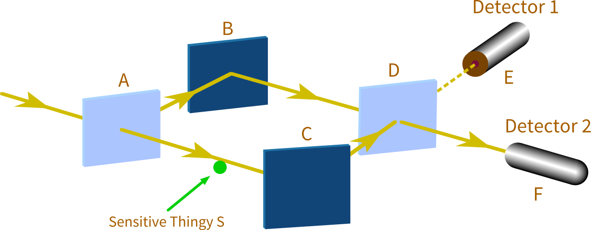
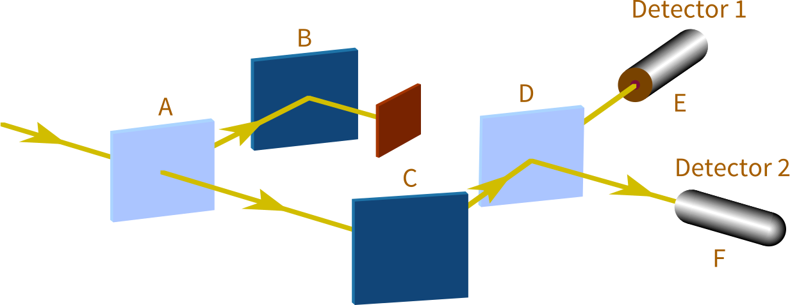

Distinct Configurations
❦
The experiment in the previous essay carried two key lessons:
First, we saw that because amplitude flows can cancel out, and because our magic measure of squared modulus is not linear, the identity of configurations is nailed down—you can’t reorganize configurations the way you can regroup possible worlds. Which configurations are the same, and which are distinct, has experimental consequences; it is an observable fact.
Second, we saw that configurations are about multiple particles. If there are two photons entering the apparatus, that doesn’t mean there are two initial configurations. Instead the initial configuration’s identity is “two photons coming in.” (Ideally, each configuration we talk about would include every particle in the experiment—including the particles making up the mirrors and detectors. And in the real universe, every configuration is about all the particles… everywhere.)
What makes for distinct configurations is not distinct particles. Each configuration is about every particle. What makes configurations distinct is particles occupying different positions—at least one particle in a different state.
To take one important demonstration…

Figure 1
Figure 1 is the same experiment as Figure 2 in Configurations and Amplitude, with one important change: Between A and C has been placed a sensitive thingy, S. The key attribute of S is that if a photon goes past S, then S ends up in a slightly different state.
Let’s say that the two possible states of S are Yes and No. The sensitive thingy S starts out in state No, and ends up in state Yes if a photon goes past.
Then the initial configuration is:
“photon heading toward A; and S in state No,” (−1 + 0i) .
Next, the action of the half-silvered mirror at A. In the previous version of this experiment, without the sensitive thingy, the two resultant configurations were “A to B” with amplitude −i and “A to C” with amplitude −1. Now, though, a new element has been introduced into the system, and all configurations are about all particles, and so every configuration mentions the new element. So the amplitude flows from the initial configuration are to:
“photon from A to B; and S in state No,” (0 − i)
“photon from A to C; and S in state Yes,” (−1 + 0i) .
Next, the action of the full mirrors at B and C:
“photon from B to D; and S in state No,” (1 + 0i) “photon from C to D; and S in state Yes,” (0 − i) .
And then the action of the half-mirror at D, on the amplitude flowing from both of the above configurations:
- “photon from D to E; and S in state No,”(0 + i)
- “photon from D to F; and S in state No,” (1 + 0i)
- “photon from D to E; and S in state Yes,”(0 − i)
- “photon from D to F; and S in state Yes,”(1 + 0i).
When we did this experiment without the sensitive thingy, the amplitude flows (1) and (3) of (0 + i) and (0 − i) to the “D to E” configuration canceled each other out. We were left with no amplitude for a photon going to Detector 1 (way up at the experimental level, we never observe a photon striking Detector 1).
But in this case, the two amplitude flows (1) and (3) are now to distinct configurations; at least one entity, S, is in a different state between (1) and (3). The amplitudes don’t cancel out.
When we wave our magical squared-modulus-ratio detector over the four final configurations, we find that the squared moduli of all are equal: 25% probability each. Way up at the level of the real world, we find that the photon has an equal chance of striking Detector 1 and Detector 2.
All the above is true, even if we, the researchers, don’t care about the state of S. Unlike possible worlds, configurations cannot be regrouped on a whim. The laws of physics say the two configurations are distinct; it’s not a question of how we can most conveniently parse up the world.
All the above is true, even if we don’t bother to look at the state of S. The configurations (1) and (3) are distinct in physics, even if we don’t know the distinction.
All the above is true, even if we don’t know S exists. The configurations (1) and (3) are distinct whether or not we have distinct mental representations for the two possibilities.
All the above is true, even if we’re in space, and S transmits a new photon off toward the interstellar void in two distinct directions, depending on whether the photon of interest passed it or not. So that we couldn’t ever find out whether S had been in Yes or No. The state of S would be embodied in the photon transmitted off to nowhere. The lost photon can be an implied invisible, and the state of S pragmatically undetectable; but the configurations are still distinct.
(The main reason it wouldn’t work, is if S were nudged, but S had an original spread in configuration space that was larger than the nudge. Then you couldn’t rely on the nudge to separate the amplitude distribution over configuration space into distinct lumps. In reality, all this takes place within a differentiable amplitude distribution over a continuous configuration space.)
Configurations are not belief states. Their distinctness is an objective fact with experimental consequences. The configurations are distinct even if no one knows the state of S; distinct even if no intelligent entity can ever find out. The configurations are distinct so long as at least one particle in the universe anywhere is in a different position. This is experimentally demonstrable.
Why am I emphasizing this? Because back in the dark ages when no one understood quantum physics…

Figure 2
Okay, so imagine that you’ve got no clue what’s really going on, and you try the experiment in Figure 2, and no photons show up at Detector 1. Cool.
You also discover that when you put a block between B and D, or a block between A and C, photons show up at Detector 1 and Detector 2 in equal proportions. But only one at a time—Detector 1 or Detector 2 goes off, not both simultaneously.
So, yes, it does seem to you like you’re dealing with a particle—the photon is only in one place at one time, every time you see it.
And yet there’s some kind of… mysterious phenomenon… that prevents the photon from showing up in Detector 1. And this mysterious phenomenon depends on the photon being able to go both ways. Even though the photon only shows up in one detector or the other, which shows, you would think, that the photon is only in one place at a time.

Figure 3
Which makes the whole pattern of the experiments seem pretty bizarre! After all, the photon either goes from A to C, or from A to B; one or the other. (Or so you would think, if you were instinctively trying to break reality down into individually real particles.) But when you block off one course or the other, as in Figure 3, you start getting different experimental results!
It’s like the photon wants to be allowed to go both ways, even though (you would think) it only goes one way or the other. And it can tell if you try to block it off, without actually going there—if it’d gone there, it would have run into the block, and not hit any detector at all.
It’s as if mere possibilities could have causal effects, in defiance of what the word “real” is usually thought to mean…
But it’s a bit early to jump to conclusions like that, when you don’t have a complete picture of what goes on inside the experiment.
Figure 4
So it occurs to you to put a sensor between A and C, like in Figure 232.4, so you can tell which way the photon really goes on each occasion.
And the mysterious phenomenon goes away.
I mean, now how crazy is that? What kind of paranoia does that inspire in some poor scientist?
Okay, so in the twenty-first century we realize in order to “know” a photon’s history, the particles making up your brain have to be correlated with the photon’s history. If having a tiny little sensitive thingy S that correlates to the photon’s history is enough to distinguish the final configurations and prevent the amplitude flows from canceling, then an entire sensor with a digital display, never mind a human brain, will put septillions of particles in different positions and prevent the amplitude flows from canceling.
But if you hadn’t worked that out yet…
Then you would ponder the sensor having banished the Mysterious Phenomenon, and think:
The photon doesn’t just want to be physically free to go either way. It’s not a little wave going along an unblocked pathway, because then just having a physically unblocked pathway would be enough.
No… I’m not allowed to know which way the photon went.
The mysterious phenomenon… doesn’t want me looking at it too closely… while it’s doing its mysterious thing.
It’s not physical possibilities that have an effect on reality… only epistemic possibilities. If I know which way the photon went, it’s no longer plausible that it went the other way… which cuts off the mysterious phenomenon as effectively as putting a block between B and D.
I have to not observe which way the photon went, in order for it to always end up at Detector 2. It has to be reasonable that the photon could have gone to either B or C. What I can know is the determining factor, regardless of which physical paths I leave open or closed.
Stop the presses! Mind is fundamental after all! Conscious awareness determines our experimental results!
You can still read this kind of stuff. In physics textbooks. Even now, when a majority of theoretical physicists know better. Stop the presses. Please, stop the presses.
Hindsight is 20/20; and so it’s easy to say that, in hindsight, there were certain clues that this interpretation was not correct.
Like, if you put the sensor between A and C but don’t read it, the mysterious phenomenon still goes away, and the photon still sometimes ends up at Detector 1. (Oh, but you could have read it, and possibilities are real now…)
But it doesn’t even have to be a sensor, a scientific instrument that you built. A single particle that gets nudged far enough will dispel the interference. A photon radiating off to where you’ll never see it again can do the trick. Not much human involvement there. Not a whole lot of conscious awareness.
Maybe before you pull the dualist fire alarm on human brains being physically special, you should provide experimental proof that a rock can’t play the same role in dispelling the Mysterious Phenomenon as a human researcher?
But that’s hindsight, and it’s easy to call the shots in hindsight. Do you really think you could’ve done better than John von Neumann, if you’d been alive at the time? The point of this kind of retrospective analysis is to ask what kind of fully general clues you could have followed, and whether there are any similar clues you’re ignoring now on current mysteries.
Though it is a little embarrassing that even after the theory of amplitudes and configurations had been worked out—with the theory now giving the definite prediction that any nudged particle would do the trick—early scientists still didn’t get it.
But you see… it had been established as Common Wisdom that configurations were possibilities, it was epistemic possibility that mattered, amplitudes were a very strange sort of partial information, and conscious observation made quantumness go away. And that it was best to avoid thinking too hard about the whole business, so long as your experimental predictions came out right.